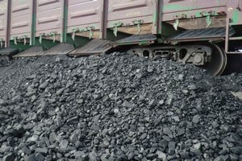
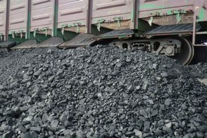

ООО "РКЕ Энерго"
Украина, 93300, Луганская область, Попаснянский район, город Попасная, улица Первомайская, дом 140.
ПРОДАЖА ВЫСОКОКАЧЕСТВЕННОГО АНТРАЦИТА ВАГОННЫМИ НОРМАМИ
ООО "РКЕ Энерго"
Компания ООО "РКЕ Энерго" предлагает к реализации высококачественный антрацит различных сортов украинского происхождения. На сегодняшний день при поиске поставщиков антрацита на территории Украины можно обнаружить множество объявления с заголовками "Продам уголь антрацит", "Предлагаю уголь антрацит". Однако, приобретая уголь у малоизвестных небольших компаний или частных предпринимателей Вы подвергаетесь риску поставки некачественной продукции, приобретения товара по завышенной цене из-за маржи большой цепочки посредников, поставки продукции не в оговоренные сроки. Также, в большинстве случаев Вам придется осуществить предоплатный платеж еще до начала поставки продукции.
В отличии от многих других поставщиков, наша компания предлагает Вам поставку антрацита вагонными нормами на условиях FCA ст. Красный Лиман, либо CPT железнодорожная станция назначения на Ваш выбор. Оплатив приобретение антрацита у нашей компании Вы можете быть уверены, что товар будет передан Вам в срок и в полном объеме. Качество нашей продукции подтверждается сертификатом качества несависимой инспекционной компании SGS Украина, которая беспристрасно указывает в сертификате фактические качественные показатели. Наша продукция предлагается с полным комплектом документов украинского образца.
Сотрудники компании ООО "РКЕ Энерго" имеют большой опыт поставок углей как на территории Украины так и на экспорт, и будут рады ответить на любые интересующие Вас вопросы.
НАША ПРОДУКЦИЯ
Наша компания предлагает к реализации высококачественный антрацит Донецкого каменноугольного бассейна. Антрацит представляет собой ископаемый уголь наиболее высокой степени углефикации, о чем свидетельствует высокая отражательная способность углей этой группы. Предагаемый нами уголь добывается из низкозольных и низкосерных пластов, что обеспечивает его высокое качество даже без дополнительного обогащения на ЦОФ.
Антрацит широко применяется как высококачественное бездымное энергетическое топливо, а также как технологическое сырьё в чёрной и цветной металлургии, химической, электротехнической промышленности и ряде других производств, связанных с продуктами переработки антрацита. Для технологических целей важны повышенная механическая и термическая устойчивость антрацита, его электропроводность и низкий выход летучих веществ. Основные нетопливные направления: производство термоантрацита, углеграфитовых блоков, электродов, электрокорунда, карбидов кальция и кремния, термографита, микрофонного порошка, использование для агломерации железных руд, обжига карбонатных пород в технологических целях. Несмотря на относительно низкий процент потребления антрацита для технологических целей (от 0,12 до 7% в зависимости от вида производств), требования к его качеству по сравнению с топливно-энергетическим использованием являются наиболее высокими. Даже сравнительно небольшое ухудшение некоторых свойств антрацита часто отрицательно влияет на качество промышленный продукции.
 
